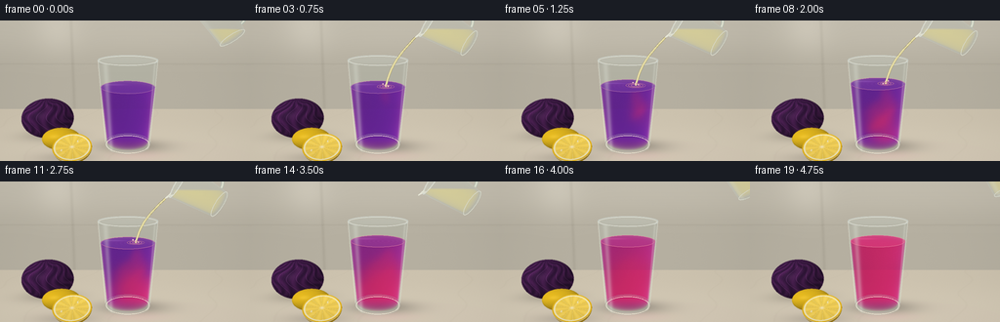
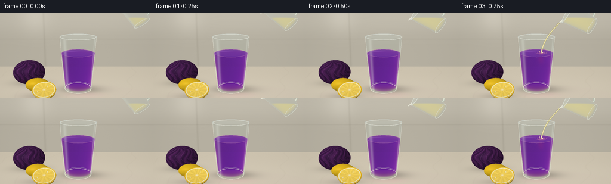

CODING AGENTS AS PIXEL WORLD MODELS
traex/GPT-6.1-Sol · phygen_149
点击播放 · 原生 RGB 像素
逐轮保存的候选
回放视频、检查图与代码变化。
每份候选均可单独播放。实际图片检查记录在下方工具轨迹中。
候选 01播放与检查图
点击播放 · 原生 RGB 像素


展开代码变化
--- 上一保存版本
+++ 本次保存版本
@@ -0,0 +1,329 @@
+"""Procedural photographic-style RGB timelapse; only numpy/Pillow geometry."""
+from pathlib import Path
+import numpy as np
+from PIL import Image, ImageDraw, ImageFilter
+import artifact_io
+
+ROOT=Path(__file__).resolve().parent
+W,H,S=256,144,3
+WW,HH=W*S,H*S
+rng=np.random.default_rng(24)
+
+def norm(x):
+ return x/np.maximum(np.linalg.norm(x,axis=-1,keepdims=True),1e-8)
+CAM=np.array([0,3.0,6.8],np.float32)
+TAR=np.array([0,1.26,0],np.float32)
+F=norm(TAR-CAM); R=norm(np.cross(F,[0,1,0])); U=np.cross(R,F)
+y,x=np.mgrid[:HH,:WW].astype(np.float32)
+D=norm(F+(x[...,None]+.5-WW/2)/(345*S)*R-(y[...,None]+.5-HH/2)/(345*S)*U).reshape(-1,3).astype(np.float32)
+O=np.broadcast_to(CAM,D.shape)
+L=norm(np.array([-3.5,5.0,4],np.float32))
+
+def project(p):
+ p=np.array(p)-CAM
+ z=np.dot(p,F)
+ return ((WW/2+345*S*np.dot(p,R)/z),(HH/2-345*S*np.dot(p,U)/z))
+
+def ellipsoid(center,rad,keep=None):
+ center=np.array(center,np.float32); rad=np.array(rad,np.float32)
+ q=(O-center)/rad; d=D/rad
+ a=np.sum(d*d,axis=1); b=np.sum(q*d,axis=1); c=np.sum(q*q,axis=1)-1
+ disc=b*b-a*c
+ rt=np.sqrt(np.maximum(0,disc)); t=(-b-rt)/a
+ t=np.where((disc>0)&(t>0),t,np.inf)
+ P=O+D*np.where(np.isfinite(t),t,0)[:,None]
+ if keep is not None:
+ ok=keep(P)
+ t=np.where(ok,t,np.inf)
+ N=norm((P-center)/(rad*rad))
+ return t,P,N
+
+def frustum(base,axis,h,r0,r1, dirs=D,orig=O):
+ axis=np.asarray(axis,np.float32); base=np.asarray(base,np.float32)
+ rel=orig-base
+ oy=rel@axis; dy=dirs@axis
+ op=rel-oy[:,None]*axis; dp=dirs-dy[:,None]*axis
+ k=(r1-r0)/h
+ rr=r0+k*oy
+ a=np.sum(dp*dp,axis=1)-(k*dy)**2
+ b=np.sum(op*dp,axis=1)-rr*k*dy
+ c=np.sum(op*op,axis=1)-rr**2
+ disc=b*b-a*c
+ sq=np.sqrt(np.maximum(disc,0))
+ t1=(-b-sq)/a; t2=(-b+sq)/a
+ lo=np.minimum(t1,t2); hi=np.maximum(t1,t2)
+ ya=-oy/(dy+1e-12); yb=(h-oy)/(dy+1e-12)
+ near=np.maximum(lo,np.minimum(ya,yb)); far=np.minimum(hi,np.maximum(ya,yb))
+ hit=(disc>=0)&(far>np.maximum(near,0))
+ near=np.where(hit,np.maximum(near,0),np.inf); far=np.where(hit,far,np.inf)
+ P=orig+dirs*np.where(hit,near,0)[:,None]
+ v=P-base; yy=v@axis
+ N=norm(v-yy[:,None]*axis-k*(r0+k*yy)[:,None]*axis)
+ iscap=(np.abs(near-ya)<1e-4)|(np.abs(near-yb)<1e-4)
+ capN=np.where((dy>0)[:,None],-axis,axis)
+ N=np.where(iscap[:,None],capN,N)
+ return near,far,P,N,hit
+
+def light(N):
+ return np.clip(N@L,0,1)
+
+def material(base,N,spec=0.03):
+ lam=light(N)
+ half=norm(L-D)
+ shine=np.clip(np.sum(N*half,axis=1),0,1)**45
+ return np.asarray(base)*(0.62+0.38*lam[:,None])+spec*255*shine[:,None]
+
+# Fixed, softly lit stone countertop and kitchen backdrop.
+tfloor=-CAM[1]/D[:,1]
+PF=O+D*tfloor[:,None]
+floor=(tfloor>0)&(PF[:,2]>-2.75)
+twall=(-2.75-CAM[2])/D[:,2]
+PW=O+D*twall[:,None]
+wall=np.broadcast_to(np.array([190,184,169],np.float32),D.shape).copy()
+wall+=(8*np.tanh((PW[:,1]-1.8)*2))[:,None]
+# Gentle cabinet divisions, blurred ambient shapes rather than busy props.
+wall-= (8*np.exp(-((PW[:,0]+1.5)/.045)**2))[:,None]
+wall-= (6*np.exp(-((PW[:,1]-1.35)/.022)**2))[:,None]
+wall+= (12*np.exp(-((PW[:,0]+1.9)/.65)**2-((PW[:,1]-2.4)/.8)**2))[:,None]
+stone=np.broadcast_to(np.array([209,199,179],np.float32),D.shape).copy()
+noise=(np.sin(PF[:,0]*84+np.sin(PF[:,2]*72))*np.sin(PF[:,2]*109)+np.sin(PF[:,0]*206+PF[:,2]*175))*.8
+vein=np.exp(-((np.sin(PF[:,0]*1.7+PF[:,2]*.6)+.22*np.sin(PF[:,2]*4+PF[:,0]))/.043)**2)*2.5
+stone+= (noise-vein+4*np.tanh(PF[:,2]+1))[:,None]
+# Soft object-contact shadows and a subdued magenta transmitted caustic.
+shadow=np.exp(-((PF[:,0]-.15)/.72)**2-((PF[:,2]+.04)/.34)**2)*.27
+shadow+=.13*np.exp(-((PF[:,0]+1.18)/.60)**2-((PF[:,2]-.55)/.26)**2)
+shadow+=.17*np.exp(-((PF[:,0]+1.78)/.65)**2-((PF[:,2]+.65)/.35)**2)
+stone*=1-shadow[:,None]
+BG=np.where(floor[:,None],stone,wall)
+DEP=np.where(floor,tfloor,twall)
+
+# Red cabbage in soft focus behind the foreground lemons.
+t,P,N=ellipsoid((-1.8,.43,-.67),(.60,.45,.54))
+q=(P-np.array([-1.8,.43,-.67]))/np.array([.60,.45,.54])
+a=np.arctan2(q[:,0],q[:,2]); elev=np.arcsin(np.clip(q[:,1],-1,1))
+fold=np.sin(13*a+3*np.sin(5*elev)+1.8*np.sin(a*3-elev*5))
+fine=np.exp(-((np.sin(24*a+7*elev+2*np.sin(elev*9)))/.10)**2)
+veins=np.exp(-((np.sin(8*a+2*np.sin(4*elev)))/.075)**2)
+col=np.array([65,29,73])[None,:]+fold[:,None]*np.array([13,5,12])+fine[:,None]*np.array([14,8,14])+veins[:,None]*np.array([58,33,56])
+col=material(col,N)
+mask=t<DEP; BG[mask]=col[mask]; DEP[mask]=t[mask]
+
+# A whole lemon, with subtly dimpled rind.
+t,P,N=ellipsoid((-1.35,.235,.12),(.41,.235,.25))
+bump=np.sin(P[:,0]*155+P[:,1]*37)*np.sin(P[:,2]*149-P[:,1]*69)
+col=material(np.array([235,190,33])+bump[:,None]*np.array([5,5,3]),N,.06)
+mask=t<DEP; BG[mask]=col[mask]; DEP[mask]=t[mask]
+
+# Fresh lemon half: real ellipsoidal peel and segmented cut face.
+LC=np.array([-1.04,.29,.66],np.float32); LR=np.array([.39,.31,.36],np.float32)
+LN=norm(np.array([0,.84,.54],np.float32)); LU=np.array([1.,0,0]); LV=np.cross(LN,LU)
+t,P,N=ellipsoid(LC,LR,lambda p: ((p-LC)@LN)<0)
+bump=np.sin(P[:,0]*173+P[:,1]*15)*np.sin(P[:,2]*185+P[:,1]*51)
+col=material(np.array([238,188,30])+bump[:,None]*5,N,.08)
+mask=t<DEP; BG[mask]=col[mask]; DEP[mask]=t[mask]
+tc=((LC-CAM)@LN)/(D@LN)
+PC=O+D*tc[:,None]; qc=PC-LC
+uv=np.stack((qc@LU/.39,qc@LV/.325),axis=1)
+r=np.linalg.norm(uv,axis=1); ang=np.arctan2(uv[:,1],uv[:,0])
+seg=(ang+.17)*10/(2*np.pi)
+sept=np.exp(-(np.sin(np.pi*seg)/.068)**2)
+pulp=(np.sin(r*150+np.sin(ang*28))*np.sin(ang*83+r*45))
+flesh=np.broadcast_to(np.array([247.,212.,87.]),D.shape).copy()
+flesh+=pulp[:,None]*np.array([3,9,16])+8*np.sin(ang*10)[:,None]
+flesh=flesh*(1-.6*sept[:,None])+np.array([255,242,190])*(.6*sept[:,None])
+pith=(r>.84)&(r<=.93); flesh[pith]=[250,238,183]
+flesh[r>.93]=[235,187,31]
+core=np.exp(-(r/.105)**2); flesh=flesh*(1-core[:,None])+np.array([255,241,194])*core[:,None]
+for aa,rr in [(1.0,.48),(3.6,.57)]:
+ sx,sy=rr*np.cos(aa),rr*np.sin(aa)
+ seed=((uv[:,0]-sx)/.038)**2+((uv[:,1]-sy)/.090)**2
+ flesh[seed<1]=[247,233,182]
+flesh*=.93+.06*(uv[:,1]+1)[:,None]/2
+mask=(r<1)&(tc>0)&(tc<DEP); BG[mask]=flesh[mask]; DEP[mask]=tc[mask]
+# Lens softness confined to scene props; main tumbler will be rendered sharply.
+BG=np.array(Image.fromarray(np.uint8(np.clip(BG.reshape(HH,WW,3),0,255))).filter(ImageFilter.GaussianBlur(.55)),dtype=np.float32).reshape(-1,3)
+
+BASE=np.array([.06,.045,0]); AX=np.array([0,1,0]); GH=1.86
+GN,GF,GP,GNormal,GM=frustum(BASE,AX,GH,.48,.61)
+
+# Reflection patterns stand in for a large window and broad photographic softboxes.
+def glass_over(image,near,far,P,N,hit,blue=.9):
+ cos=np.clip(-np.sum(D*N,axis=1),0,1)
+ fres=.04+.96*(1-cos)**5
+ # Long soft window reflections, broken subtly at the lower edge.
+ hx=np.exp(-((N[:,0]+.72)/.095)**2)*np.clip(N[:,2],0,1)
+ hx2=np.exp(-((N[:,0]-.86)/.035)**2)*np.clip(N[:,2],0,1)
+ shine=(hx*.46+hx2*.49)
+ refl=np.array([226.,230.,218.])+np.sin(P[:,1]*2.7)[:,None]*3
+ alpha=np.clip(.04+fres*.42+shine,0,.80)
+ out=image.copy()
+ tinted=image*np.array([.965,.987,.991])+np.array([2.,2.,2.])
+ out[hit]=(tinted*(1-alpha[:,None])+refl*alpha[:,None])[hit]
+ return out
+
+def acid_field(P,tt,h):
+ # Descending acid plume and broad curls: growing in space, not a hue dissolve.
+ total=np.zeros(len(P),np.float32)
+ for emit in np.arange(.72,min(tt,3.35)+.001,.21):
+ age=tt-emit
+ cy=h-.12-.69*age
+ if cy<.16: cy=.16+(.16-cy)*.18
+ cx=.20+np.sin(age*5.0)*(.035+.15*min(age,1.7))
+ cz=.055+.11*np.sin(age*3.7)
+ sx=.085+.13*age; sy=.13+.16*age; sz=.095+.15*age
+ # Warped Gaussian parcels make curling magenta plumes.
+ wx=P[:,0]+.047*np.sin(P[:,1]*17+P[:,2]*11-age*4)*np.sin(age*2)
+ wz=P[:,2]+.05*np.sin(P[:,1]*13-P[:,0]*9+age*3)
+ total+=.66*np.exp(-((wx-cx)/sx)**2-((P[:,1]-cy)/sy)**2-((wz-cz)/sz)**2)
+ c=1-np.exp(-total*1.75)
+ uniform=np.clip((tt-2.65)/1.9,0,1)**1.4
+ return c+(1-c)*uniform
+
+def main_glass(tt):
+ h=1.30+.15*np.clip((tt-.65)/2.8,0,1)
+ out=BG.copy()
+ # Soft colored light on the worktop.
+ caustic=np.exp(-((PF[:,0]-.25)/.65)**2-((PF[:,2]-.44)/.23)**2)*floor
+ out+=caustic[:,None]*np.array([9,-3,3])
+ # Background seen through the hollow glass, with lateral optical compression.
+ edges=GM & (GP[:,1]>h+.02)
+ uvx=GP[:,0]-BASE[0]
+ shift=(uvx*8*S).astype(int)
+ indices=np.arange(len(out)); yy=indices//WW; xx=indices%WW
+ refr_idx=yy*WW+np.clip(xx+shift,0,WW-1)
+ out[edges]=BG[refr_idx[edges]]*.975+3
+ ln,lf,LP,LN,lm=frustum(BASE+np.array([0,.075,0]),AX,h-.075,.447,.565)
+ ids=np.flatnonzero(lm)
+ if len(ids):
+ front=ln[ids]; length=lf[ids]-front
+ absorb=np.zeros((len(ids),3),np.float32); scat=np.zeros_like(absorb)
+ for u in (.07,.20,.34,.48,.62,.76,.90):
+ pts=O[ids]+D[ids]*(front+length*u)[:,None]
+ a=acid_field(pts,tt,h)
+ # Spectral attenuation shifts purple to vivid raspberry on acidification.
+ coeff=np.array([2.4,5.1,1.35])*(1-a[:,None])+np.array([.85,4.9,2.65])*a[:,None]
+ absorb+=coeff/7
+ liquid=np.array([89,24,137])*(1-a[:,None])+np.array([211,30,94])*a[:,None]
+ illumination=.87+.17*(pts[:,0]+.5)+.07*np.sin(pts[:,1]*6+pts[:,2]*4)
+ scat+=liquid*illumination[:,None]/7
+ trans=np.exp(-absorb*length[:,None]*1.1)
+ out[ids]=out[ids]*trans+scat*(1-trans)
+ top=lm & (np.abs(LP[:,1]-(BASE[1]+h))<.002)
+ topids=np.flatnonzero(top)
+ if len(topids):
+ p=LP[topids]; a=acid_field(p,tt,h)
+ topcol=np.array([108,43,154])*(1-a[:,None])+np.array([222,48,117])*a[:,None]
+ rr=np.sqrt((p[:,0]-.22)**2+(p[:,2]-.04)**2)
+ ripple=np.sin(rr*72-tt*19)*np.exp(-rr*4)*np.clip((tt-.6)*3,0,1)*np.clip((3.9-tt)*3,0,1)
+ topcol+=(ripple*7)[:,None]
+ out[topids]=out[topids]*.25+topcol*.75
+ window=np.exp(-((p[:,0]+.20)/.22)**2-((p[:,2]+.18)/.055)**2)
+ out[topids]+=window[:,None]*19
+ out=glass_over(out,GN,GF,GP,GNormal,GM)
+ # Thick clear bottom, with a bright weighted foot and rim done as projected 3-D curves.
+ return out,h
+
+def ellipse_points(center,axis,u,r,n=150):
+ v=np.cross(axis,u)
+ return [project(np.asarray(center)+r*(np.cos(a)*u+np.sin(a)*v)) for a in np.linspace(0,2*np.pi,n)]
+
+def drawline(draw,pts,fill,width):
+ draw.line(pts,fill=fill,width=max(1,int(width*S)),joint='curve')
+
+frames=[]
+for frame in range(20):
+ tt=frame/4
+ out,h=main_glass(tt)
+ # The clear small pouring pitcher tips into view, then rights and retreats.
+ enter=np.clip((tt-.0)/.6,0,1)
+ leave=np.clip((tt-3.45)/.65,0,1)
+ angle=np.deg2rad(36+25*enter-34*leave)
+ axis=np.array([-np.sin(angle),np.cos(angle),0],np.float32)
+ across=np.array([np.cos(angle),np.sin(angle),0],np.float32)
+ base=np.array([1.88+.74*leave+.25*(1-enter),2.25+.27*leave+.10*(1-enter),.08],np.float32)
+ ph=.94
+ jn,jf,jp,jnormal,jm=frustum(base,axis,ph,.27,.36)
+ # Horizontal free surface of pale cloudy lemon juice inside the tilted pitcher.
+ in_,if_,ip,inorm,im=frustum(base+axis*.035,axis,ph-.075,.245,.334)
+ valid=im
+ lower_y=2.53+.3*leave
+ # Clip interior ray interval by the juice's horizontal free surface.
+ cut=(lower_y-CAM[1])/D[:,1]
+ fluid_near=np.maximum(in_,np.where(D[:,1]<0,cut,-np.inf))
+ fluid_far=np.minimum(if_,np.where(D[:,1]>0,cut,np.inf))
+ fluid=valid&(fluid_far>fluid_near)
+ path=np.where(fluid,fluid_far-fluid_near,0)
+ alpha=1-np.exp(-path*2.1)
+ juice=np.array([232,215,144])
+ out[fluid]=(out*(1-alpha[:,None])+juice*alpha[:,None])[fluid]
+ out=glass_over(out,jn,jf,jp,jnormal,jm)
+ img=Image.fromarray(np.uint8(np.clip(out.reshape(HH,WW,3),0,255)))
+ draw=ImageDraw.Draw(img)
+ # Delicate hollow rim, weighted base and long non-uniform glass edge glints.
+ for cy,rad,col,wd in [(GH+.045,.61,(204,211,204),.85), (GH+.039,.584,(241,238,223),.60),(.11,.48,(181,187,181),.6),(.069,.466,(241,235,215),.8)]:
+ pts=ellipse_points([.06,cy,0],AX,np.array([1,0,0]),rad)
+ drawline(draw,pts,col,wd)
+ # Left and right edge highlights taper with the clear glass wall.
+ for side,col,wid in [(-1,(236,235,220),.65),(1,(224,226,212),.5)]:
+ pts=[project([.06+side*(.48+.13*s),.12+s*1.78,.025]) for s in np.linspace(0,1,60)]
+ drawline(draw,pts,col,wid)
+ # A soft bright meniscus, confined to the back and front edge of the colored liquid.
+ r=.555
+ for start,end,color in [(0,np.pi,(187,120,175)),(np.pi,2*np.pi,(211,141,177))]:
+ pink=np.clip((tt-1)/3,0,1)
+ cc=tuple(np.array(color)*(1-pink)+np.array([239,137,163])*pink)
+ pts=[project([.06+r*np.cos(a),BASE[1]+h,r*np.sin(a)]) for a in np.linspace(start,end,80)]
+ drawline(draw,pts,tuple(int(c) for c in cc),.55)
+ # Pitcher lip and thick foot; its handle continues outside the frame.
+ mouth=base+axis*ph
+ pts=ellipse_points(mouth,axis,across,.36)
+ drawline(draw,pts,(218,225,217),.8)
+ pts=ellipse_points(mouth-axis*.012,axis,across,.333)
+ drawline(draw,pts,(244,241,223),.6)
+ pts=ellipse_points(base+axis*.015,axis,across,.27)
+ drawline(draw,pts,(220,221,206),.75)
+ handle=[]
+ for a in np.linspace(-np.pi/2,np.pi/2,75):
+ p=base+axis*(.48+.33*np.sin(a))+across*(.29+.25*np.cos(a))
+ handle.append(project(p))
+ drawline(draw,handle,(187,196,183),3.5)
+ drawline(draw,handle,(229,231,213),1.8)
+ # A slight pointed pouring lip at the lower edge of the tilted mouth.
+ lip=mouth-across*.36
+ spout=lip+np.array([-.09,-.025,0])
+ lippts=[project(mouth-across*.29+np.array([0,0,-.14])),project(spout),project(mouth-across*.29+np.array([0,0,.14]))]
+ drawline(draw,lippts,(234,234,218),1.1)
+ # Gravity-curved continuous translucent pale juice thread, entering the tumbler.
+ flow=np.clip((tt-.5)/.2,0,1)*np.clip((3.48-tt)/.28,0,1)
+ if flow>0:
+ start=spout
+ end=np.array([.22,BASE[1]+h+.005,.04])
+ pts=[]
+ for u in np.linspace(0,1,90):
+ p=start*(1-u)+end*u
+ p[0]-=.105*np.sin(np.pi*u)
+ p[2]+=.008*np.sin(u*30+tt*5)
+ pts.append(project(p))
+ drawline(draw,pts,(161,151,105),2.5*flow)
+ drawline(draw,pts,(230,220,158),1.7*flow)
+ drawline(draw,[(px-.42*S,py) for px,py in pts],(252,246,213),.48*flow)
+ # Tiny impact crown and concentric capillary waves on the surface.
+ for k in range(3):
+ rad=.055+(k+((tt*3)%1))*.054
+ rip=[project([.22+rad*np.cos(a),BASE[1]+h+.008,.04+rad*np.sin(a)]) for a in np.linspace(0,2*np.pi,80)]
+ drawline(draw,rip,(221-k*14,137-k*7,166-k*7),.35)
+ for k in range(3):
+ phase=(tt*2+k*.29)%1
+ p=[.22+(k-1)*.055,BASE[1]+h+.06*np.sin(phase*np.pi),.04-.025]
+ px,py=project(p); rr=.6*S
+ draw.ellipse([px-rr,py-rr,px+rr,py+rr],fill=(237,196,198))
+ # Restrained sensor texture and filmic warm color, stable through the timelapse.
+ arr=np.asarray(img,dtype=np.float32)
+ vign=(1-.055*((x-WW*.50)/(WW*.7))**2-.045*((y-HH*.52)/(HH*.8))**2)
+ arr*=vign[...,None]
+ arr+=rng.normal(0,.40,(HH,WW,1))
+ img=Image.fromarray(np.uint8(np.clip(arr,0,255))).resize((W,H),Image.Resampling.LANCZOS)
+ frames.append(np.array(img))
+ print(f'frame {frame:02d} rendered',flush=True)
+artifact_io.save(np.stack(frames),ROOT)
+print('Saved 20 RGB frames and player to', ROOT)
可观测工具轨迹
实际执行的命令与返回图片。
命令 1exit 0
/bin/bash -lc 'ls -la && cat prompt.txt && cat GENERATION_RULES.md && cat task_spec.json'
命令 2exit 0
/bin/bash -lc "cat artifact_io.py && python - <<'PY' import PIL,numpy print(PIL.__version__, numpy.__version__) PY"
命令 3exit 0
/bin/bash -lc "cat > generate.py <<'PY'
\"\"\"Procedural photographic-style RGB timelapse; only numpy/Pillow geometry.\"\"\"
from pathlib import Path
import numpy as np
from PIL import Image, ImageDraw, ImageFilter
import artifact_io
ROOT=Path(__file__).resolve().parent
W,H,S=256,144,3
WW,HH=W*S,H*S
rng=np.random.default_rng(24)
def norm(x):
return x/np.maximum(np.linalg.norm(x,axis=-1,keepdims=True),1e-8)
CAM=np.array([0,3.0,6.8],np.float32)
TAR=np.array([0,1.26,0],np.float32)
F=norm(TAR-CAM); R=norm(np.cross(F,[0,1,0])); U=np.cross(R,F)
y,x=np.mgrid[:HH,:WW].astype(np.float32)
D=norm(F+(x[...,None]+.5-WW/2)/(345*S)*R-(y[...,None]+.5-HH/2)/(345*S)*U).reshape(-1,3).astype(np.float32)
O=np.broadcast_to(CAM,D.shape)
L=norm(np.array([-3.5,5.0,4],np.float32))
def project(p):
p=np.array(p)-CAM
z=np.dot(p,F)
return ((WW/2+345*S*np.dot(p,R)/z),(HH/2-345*S*np.dot(p,U)/z))
def ellipsoid(center,rad,keep=None):
center=np.array(center,np.float32); rad=np.array(rad,np.float32)
q=(O-center)/rad; d=D/rad
a=np.sum(d*d,axis=1); b=np.sum(q*d,axis=1); c=np.sum(q*q,axis=1)-1
disc=b*b-a*c
rt=np.sqrt(np.maximum(0,disc)); t=(-b-rt)/a
t=np.where((disc>0)&(t>0),t,np.inf)
P=O+D*np.where(np.isfinite(t),t,0)[:,None]
if keep is not None:
ok=keep(P)
t=np.where(ok,t,np.inf)
N=norm((P-center)/(rad*rad))
return t,P,N
def frustum(base,axis,h,r0,r1, dirs=D,orig=O):
axis=np.asarray(axis,np.float32); base=np.asarray(base,np.float32)
rel=orig-base
oy=rel@axis; dy=dirs@axis
op=rel-oy[:,None]*axis; dp=dirs-dy[:,None]*axis
k=(r1-r0)/h
rr=r0+k*oy
a=np.sum(dp*dp,axis=1)-(k*dy)**2
b=np.sum(op*dp,axis=1)-rr*k*dy
c=np.sum(op*op,axis=1)-rr**2
disc=b*b-a*c
sq=np.sqrt(np.maximum(disc,0))
t1=(-b-sq)/a; t2=(-b+sq)/a
lo=np.minimum(t1,t2); hi=np.maximum(t1,t2)
ya=-oy/(dy+1e-12); yb=(h-oy)/(dy+1e-12)
near=np.maximum(lo,np.minimum(ya,yb)); far=np.minimum(hi,np.maximum(ya,yb))
hit=(disc>=0)&(far>np.maximum(near,0))
near=np.where(hit,np.maximum(near,0),np.inf); far=np.where(hit,far,np.inf)
P=orig+dirs*np.where(hit,near,0)[:,None]
v=P-base; yy=v@axis
N=norm(v-yy[:,None]*axis-k*(r0+k*yy)[:,None]*axis)
iscap=(np.abs(near-ya)<1e-4)|(np.abs(near-yb)<1e-4)
capN=np.where((dy>0)[:,None],-axis,axis)
N=np.where(iscap[:,None],capN,N)
return near,far,P,N,hit
def light(N):
return np.clip(N@L,0,1)
def material(base,N,spec=0.03):
lam=light(N)
half=norm(L-D)
shine=np.clip(np.sum(N*half,axis=1),0,1)**45
return np.asarray(base)*(0.62+0.38*lam[:,None])+spec*255*shine[:,None]
# Fixed, softly lit stone countertop and kitchen backdrop.
tfloor=-CAM[1]/D[:,1]
PF=O+D*tfloor[:,None]
floor=(tfloor>0)&(PF[:,2]>-2.75)
twall=(-2.75-CAM[2])/D[:,2]
PW=O+D*twall[:,None]
wall=np.broadcast_to(np.array([190,184,169],np.float32),D.shape).copy()
wall+=(8*np.tanh((PW[:,1]-1.8)*2))[:,None]
# Gentle cabinet divisions, blurred ambient shapes rather than busy props.
wall-= (8*np.exp(-((PW[:,0]+1.5)/.045)**2))[:,None]
wall-= (6*np.exp(-((PW[:,1]-1.35)/.022)**2))[:,None]
wall+= (12*np.exp(-((PW[:,0]+1.9)/.65)**2-((PW[:,1]-2.4)/.8)**2))[:,None]
stone=np.broadcast_to(np.array([209,199,179],np.float32),D.shape).copy()
noise=(np.sin(PF[:,0]*84+np.sin(PF[:,2]*72))*np.sin(PF[:,2]*109)+np.sin(PF[:,0]*206+PF[:,2]*175))*.8
vein=np.exp(-((np.sin(PF[:,0]*1.7+PF[:,2]*.6)+.22*np.sin(PF[:,2]*4+PF[:,0]))/.043)**2)*2.5
stone+= (noise-vein+4*np.tanh(PF[:,2]+1))[:,None]
# Soft object-contact shadows and a subdued magenta transmitted caustic.
shadow=np.exp(-((PF[:,0]-.15)/.72)**2-((PF[:,2]+.04)/.34)**2)*.27
shadow+=.13*np.exp(-((PF[:,0]+1.18)/.60)**2-((PF[:,2]-.55)/.26)**2)
shadow+=.17*np.exp(-((PF[:,0]+1.78)/.65)**2-((PF[:,2]+.65)/.35)**2)
stone*=1-shadow[:,None]
BG=np.where(floor[:,None],stone,wall)
DEP=np.where(floor,tfloor,twall)
# Red cabbage in soft focus behind the foreground lemons.
t,P,N=ellipsoid((-1.8,.43,-.67),(.60,.45,.54))
q=(P-np.array([-1.8,.43,-.67]))/np.array([.60,.45,.54])
a=np.arctan2(q[:,0],q[:,2]); elev=np.arcsin(np.clip(q[:,1],-1,1))
fold=np.sin(13*a+3*np.sin(5*elev)+1.8*np.sin(a*3-elev*5))
fine=np.exp(-((np.sin(24*a+7*elev+2*np.sin(elev*9)))/.10)**2)
veins=np.exp(-((np.sin(8*a+2*np.sin(4*elev)))/.075)**2)
col=np.array([65,29,73])[None,:]+fold[:,None]*np.array([13,5,12])+fine[:,None]*np.array([14,8,14])+veins[:,None]*np.array([58,33,56])
col=material(col,N)
mask=t<DEP; BG[mask]=col[mask]; DEP[mask]=t[mask]
# A whole lemon, with subtly dimpled rind.
t,P,N=ellipsoid((-1.35,.235,.12),(.41,.235,.25))
bump=np.sin(P[:,0]*155+P[:,1]*37)*np.sin(P[:,2]*149-P[:,1]*69)
col=material(np.array([235,190,33])+bump[:,None]*np.array([5,5,3]),N,.06)
mask=t<DEP; BG[mask]=col[mask]; DEP[mask]=t[mask]
# Fresh lemon half: real ellipsoidal peel and segmented cut face.
LC=np.array([-1.04,.29,.66],np.float32); LR=np.array([.39,.31,.36],np.float32)
LN=norm(np.array([0,.84,.54],np.float32)); LU=np.array([1.,0,0]); LV=np.cross(LN,LU)
t,P,N=ellipsoid(LC,LR,lambda p: ((p-LC)@LN)<0)
bump=np.sin(P[:,0]*173+P[:,1]*15)*np.sin(P[:,2]*185+P[:,1]*51)
col=material(np.array([238,188,30])+bump[:,None]*5,N,.08)
mask=t<DEP; BG[mask]=col[mask]; DEP[mask]=t[mask]
tc=((LC-CAM)@LN)/(D@LN)
PC=O+D*tc[:,None]; qc=PC-LC
uv=np.stack((qc@LU/.39,qc@LV/.325),axis=1)
r=np.linalg.norm(uv,axis=1); ang=np.arctan2(uv[:,1],uv[:,0])
seg=(ang+.17)*10/(2*np.pi)
sept=np.exp(-(np.sin(np.pi*seg)/.068)**2)
pulp=(np.sin(r*150+np.sin(ang*28))*np.sin(ang*83+r*45))
flesh=np.broadcast_to(np.array([247.,212.,87.]),D.shape).copy()
flesh+=pulp[:,None]*np.array([3,9,16])+8*np.sin(ang*10)[:,None]
flesh=flesh*(1-.6*sept[:,None])+np.array([255,242,190])*(.6*sept[:,None])
pith=(r>.84)&(r<=.93); flesh[pith]=[250,238,183]
flesh[r>.93]=[235,187,31]
core=np.exp(-(r/.105)**2); flesh=flesh*(1-core[:,None])+np.array([255,241,194])*core[:,None]
for aa,rr in [(1.0,.48),(3.6,.57)]:
sx,sy=rr*np.cos(aa),rr*np.sin(aa)
seed=((uv[:,0]-sx)/.038)**2+((uv[:,1]-sy)/.090)**2
flesh[seed<1]=[247,233,182]
flesh*=.93+.06*(uv[:,1]+1)[:,None]/2
mask=(r<1)&(tc>0)&(tc<DEP); BG[mask]=flesh[mask]; DEP[mask]=tc[mask]
# Lens softness confined to scene props; main tumbler will be rendered sharply.
BG=np.array(Image.fromarray(np.uint8(np.clip(BG.reshape(HH,WW,3),0,255))).filter(ImageFilter.GaussianBlur(.55)),dtype=np.float32).reshape(-1,3)
BASE=np.array([.06,.045,0]); AX=np.array([0,1,0]); GH=1.86
GN,GF,GP,GNormal,GM=frustum(BASE,AX,GH,.48,.61)
# Reflection patterns stand in for a large window and broad photographic softboxes.
def glass_over(image,near,far,P,N,hit,blue=.9):
cos=np.clip(-np.sum(D*N,axis=1),0,1)
fres=.04+.96*(1-cos)**5
# Long soft window reflections, broken subtly at the lower edge.
hx=np.exp(-((N[:,0]+.72)/.095)**2)*np.clip(N[:,2],0,1)
hx2=np.exp(-((N[:,0]-.86)/.035)**2)*np.clip(N[:,2],0,1)
shine=(hx*.46+hx2*.49)
refl=np.array([226.,230.,218.])+np.sin(P[:,1]*2.7)[:,None]*3
alpha=np.clip(.04+fres*.42+shine,0,.80)
out=image.copy()
tinted=image*np.array([.965,.987,.991])+np.array([2.,2.,2.])
out[hit]=(tinted*(1-alpha[:,None])+refl*alpha[:,None])[hit]
return out
def acid_field(P,tt,h):
# Descending acid plume and broad curls: growing in space, not a hue dissolve.
total=np.zeros(len(P),np.float32)
for emit in np.arange(.72,min(tt,3.35)+.001,.21):
age=tt-emit
cy=h-.12-.69*age
if cy<.16: cy=.16+(.16-cy)*.18
cx=.20+np.sin(age*5.0)*(.035+.15*min(age,1.7))
cz=.055+.11*np.sin(age*3.7)
sx=.085+.13*age; sy=.13+.16*age; sz=.095+.15*age
# Warped Gaussian parcels make curling magenta plumes.
wx=P[:,0]+.047*np.sin(P[:,1]*17+P[:,2]*11-age*4)*np.sin(age*2)
wz=P[:,2]+.05*np.sin(P[:,1]*13-P[:,0]*9+age*3)
total+=.66*np.exp(-((wx-cx)/sx)**2-((P[:,1]-cy)/sy)**2-((wz-cz)/sz)**2)
c=1-np.exp(-total*1.75)
uniform=np.clip((tt-2.65)/1.9,0,1)**1.4
return c+(1-c)*uniform
def main_glass(tt):
h=1.30+.15*np.clip((tt-.65)/2.8,0,1)
out=BG.copy()
# Soft colored light on the worktop.
caustic=np.exp(-((PF[:,0]-.25)/.65)**2-((PF[:,2]-.44)/.23)**2)*floor
out+=caustic[:,None]*np.array([9,-3,3])
# Background seen through the hollow glass, with lateral optical compression.
edges=GM & (GP[:,1]>h+.02)
uvx=GP[:,0]-BASE[0]
shift=(uvx*8*S).astype(int)
indices=np.arange(len(out)); yy=indices//WW; xx=indices%WW
refr_idx=yy*WW+np.clip(xx+shift,0,WW-1)
out[edges]=BG[refr_idx[edges]]*.975+3
ln,lf,LP,LN,lm=frustum(BASE+np.array([0,.075,0]),AX,h-.075,.447,.565)
ids=np.flatnonzero(lm)
if len(ids):
front=ln[ids]; length=lf[ids]-front
absorb=np.zeros((len(ids),3),np.float32); scat=np.zeros_like(absorb)
for u in (.07,.20,.34,.48,.62,.76,.90):
pts=O[ids]+D[ids]*(front+length*u)[:,None]
a=acid_field(pts,tt,h)
# Spectral attenuation shifts purple to vivid raspberry on acidification.
coeff=np.array([2.4,5.1,1.35])*(1-a[:,None])+np.array([.85,4.9,2.65])*a[:,None]
absorb+=coeff/7
liquid=np.array([89,24,137])*(1-a[:,None])+np.array([211,30,94])*a[:,None]
illumination=.87+.17*(pts[:,0]+.5)+.07*np.sin(pts[:,1]*6+pts[:,2]*4)
scat+=liquid*illumination[:,None]/7
trans=np.exp(-absorb*length[:,None]*1.1)
out[ids]=out[ids]*trans+scat*(1-trans)
top=lm & (np.abs(LP[:,1]-(BASE[1]+h))<.002)
topids=np.flatnonzero(top)
if len(topids):
p=LP[topids]; a=acid_field(p,tt,h)
topcol=np.array([108,43,154])*(1-a[:,None])+np.array([222,48,117])*a[:,None]
rr=np.sqrt((p[:,0]-.22)**2+(p[:,2]-.04)**2)
ripple=np.sin(rr*72-tt*19)*np.exp(-rr*4)*np.clip((tt-.6)*3,0,1)*np.clip((3.9-tt)*3,0,1)
topcol+=(ripple*7)[:,None]
out[topids]=out[topids]*.25+topcol*.75
window=np.exp(-((p[:,0]+.20)/.22)**2-((p[:,2]+.18)/.055)**2)
out[topids]+=window[:,None]*19
out=glass_over(out,GN,GF,GP,GNormal,GM)
# Thick clear bottom, with a bright weighted foot and rim done as projected 3-D curves.
return out,h
def ellipse_points(center,axis,u,r,n=150):
v=np.cross(axis,u)
return [project(np.asarray(center)+r*(np.cos(a)*u+np.sin(a)*v)) for a in np.linspace(0,2*np.pi,n)]
def drawline(draw,pts,fill,width):
draw.line(pts,fill=fill,width=max(1,int(width*S)),joint='curve')
frames=[]
for frame in range(20):
tt=frame/4
out,h=main_glass(tt)
# The clear small pouring pitcher tips into view, then rights and retreats.
enter=np.clip((tt-.0)/.6,0,1)
leave=np.clip((tt-3.45)/.65,0,1)
angle=np.deg2rad(36+25*enter-34*leave)
axis=np.array([-np.sin(angle),np.cos(angle),0],np.float32)
across=np.array([np.cos(angle),np.sin(angle),0],np.float32)
base=np.array([1.88+.74*leave+.25*(1-enter),2.25+.27*leave+.10*(1-enter),.08],np.float32)
ph=.94
jn,jf,jp,jnormal,jm=frustum(base,axis,ph,.27,.36)
# Horizontal free surface of pale cloudy lemon juice inside the tilted pitcher.
in_,if_,ip,inorm,im=frustum(base+axis*.035,axis,ph-.075,.245,.334)
valid=im
lower_y=2.53+.3*leave
# Clip interior ray interval by the juice's horizontal free surface.
cut=(lower_y-CAM[1])/D[:,1]
fluid_near=np.maximum(in_,np.where(D[:,1]<0,cut,-np.inf))
fluid_far=np.minimum(if_,np.where(D[:,1]>0,cut,np.inf))
fluid=valid&(fluid_far>fluid_near)
path=np.where(fluid,fluid_far-fluid_near,0)
alpha=1-np.exp(-path*2.1)
juice=np.array([232,215,144])
out[fluid]=(out*(1-alpha[:,None])+juice*alpha[:,None])[fluid]
out=glass_over(out,jn,jf,jp,jnormal,jm)
img=Image.fromarray(np.uint8(np.clip(out.reshape(HH,WW,3),0,255)))
draw=ImageDraw.Draw(img)
# Delicate hollow rim, weighted base and long non-uniform glass edge glints.
for cy,rad,col,wd in [(GH+.045,.61,(204,211,204),.85), (GH+.039,.584,(241,238,223),.60),(.11,.48,(181,187,181),.6),(.069,.466,(241,235,215),.8)]:
pts=ellipse_points([.06,cy,0],AX,np.array([1,0,0]),rad)
drawline(draw,pts,col,wd)
# Left and right edge highlights taper with the clear glass wall.
for side,col,wid in [(-1,(236,235,220),.65),(1,(224,226,212),.5)]:
pts=[project([.06+side*(.48+.13*s),.12+s*1.78,.025]) for s in np.linspace(0,1,60)]
drawline(draw,pts,col,wid)
# A soft bright meniscus, confined to the back and front edge of the colored liquid.
r=.555
for start,end,color in [(0,np.pi,(187,120,175)),(np.pi,2*np.pi,(211,141,177))]:
pink=np.clip((tt-1)/3,0,1)
cc=tuple(np.array(color)*(1-pink)+np.array([239,137,163])*pink)
pts=[project([.06+r*np.cos(a),BASE[1]+h,r*np.sin(a)]) for a in np.linspace(start,end,80)]
drawline(draw,pts,tuple(int(c) for c in cc),.55)
# Pitcher lip and thick foot; its handle continues outside the frame.
mouth=base+axis*ph
pts=ellipse_points(mouth,axis,across,.36)
drawline(draw,pts,(218,225,217),.8)
pts=ellipse_points(mouth-axis*.012,axis,across,.333)
drawline(draw,pts,(244,241,223),.6)
pts=ellipse_points(base+axis*.015,axis,across,.27)
drawline(draw,pts,(220,221,206),.75)
handle=[]
for a in np.linspace(-np.pi/2,np.pi/2,75):
p=base+axis*(.48+.33*np.sin(a))+across*(.29+.25*np.cos(a))
handle.append(project(p))
drawline(draw,handle,(187,196,183),3.5)
drawline(draw,handle,(229,231,213),1.8)
# A slight pointed pouring lip at the lower edge of the tilted mouth.
lip=mouth-across*.36
spout=lip+np.array([-.09,-.025,0])
lippts=[project(mouth-across*.29+np.array([0,0,-.14])),project(spout),project(mouth-across*.29+np.array([0,0,.14]))]
drawline(draw,lippts,(234,234,218),1.1)
# Gravity-curved continuous translucent pale juice thread, entering the tumbler.
flow=np.clip((tt-.5)/.2,0,1)*np.clip((3.48-tt)/.28,0,1)
if flow>0:
start=spout
end=np.array([.22,BASE[1]+h+.005,.04])
pts=[]
for u in np.linspace(0,1,90):
p=start*(1-u)+end*u
p[0]-=.105*np.sin(np.pi*u)
p[2]+=.008*np.sin(u*30+tt*5)
pts.append(project(p))
drawline(draw,pts,(161,151,105),2.5*flow)
drawline(draw,pts,(230,220,158),1.7*flow)
drawline(draw,[(px-.42*S,py) for px,py in pts],(252,246,213),.48*flow)
# Tiny impact crown and concentric capillary waves on the surface.
for k in range(3):
rad=.055+(k+((tt*3)%1))*.054
rip=[project([.22+rad*np.cos(a),BASE[1]+h+.008,.04+rad*np.sin(a)]) for a in np.linspace(0,2*np.pi,80)]
drawline(draw,rip,(221-k*14,137-k*7,166-k*7),.35)
for k in range(3):
phase=(tt*2+k*.29)%1
p=[.22+(k-1)*.055,BASE[1]+h+.06*np.sin(phase*np.pi),.04-.025]
px,py=project(p); rr=.6*S
draw.ellipse([px-rr,py-rr,px+rr,py+rr],fill=(237,196,198))
# Restrained sensor texture and filmic warm color, stable through the timelapse.
arr=np.asarray(img,dtype=np.float32)
vign=(1-.055*((x-WW*.50)/(WW*.7))**2-.045*((y-HH*.52)/(HH*.8))**2)
arr*=vign[...,None]
arr+=rng.normal(0,.40,(HH,WW,1))
img=Image.fromarray(np.uint8(np.clip(arr,0,255))).resize((W,H),Image.Resampling.LANCZOS)
frames.append(np.array(img))
print(f'frame {frame:02d} rendered',flush=True)
artifact_io.save(np.stack(frames),ROOT)
print('Saved 20 RGB frames and player to', ROOT)
PY
python generate.py"命令 4exit 0
/bin/bash -lc "command -v ffmpeg || true; python - <<'PY'
from pathlib import Path
import numpy as np
from PIL import Image
p=np.load('pixels.npz')['pixels']
print('Packed RGB tensor:',p.shape,p.dtype)
for i in (0,6,12,19):
im=np.array(Image.open(f'frames/{i:02d}.png'))
print(i,'juice RGB mean',im[76:112,116:146].mean(axis=(0,1)).round(1),'total range',im.min(),im.max())
for name in ('generate.py','pixels.npz','index.html','inspection.png','transition_check.png'):
p=Path(name); print(name,p.stat().st_size)
PY"保存候选 1 份；完成命令 4 次；可验证图片返回 0 张。原始 API 响应与完整日志保留在本地。